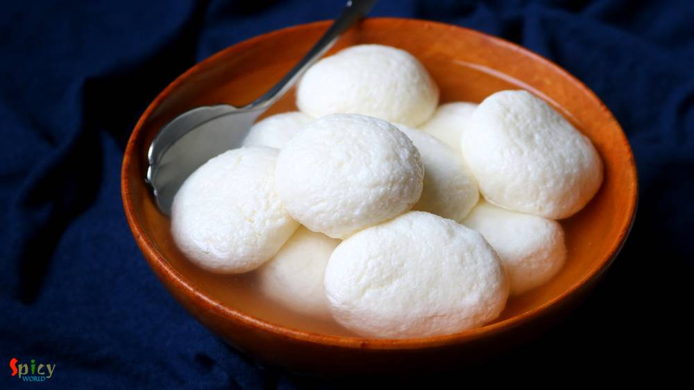
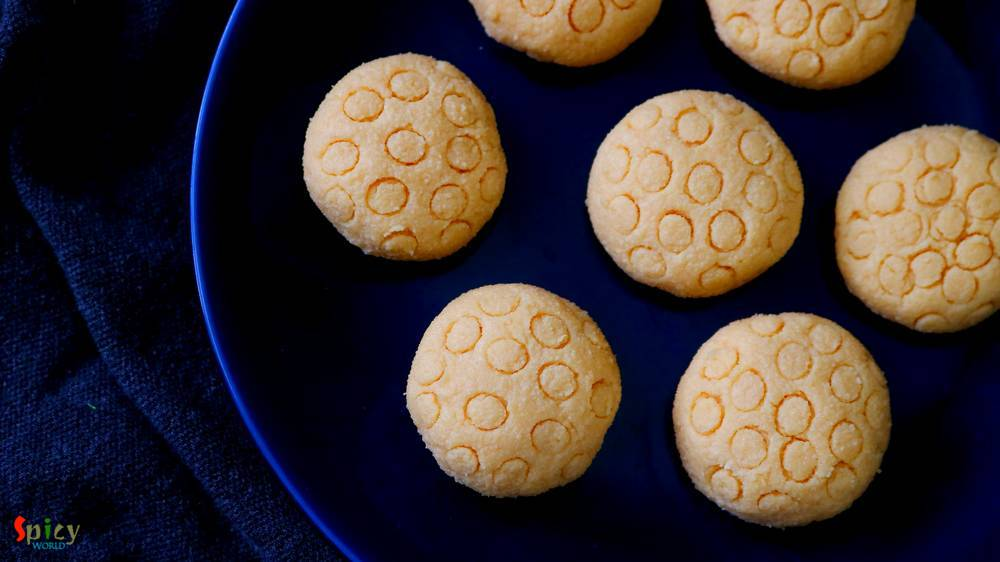
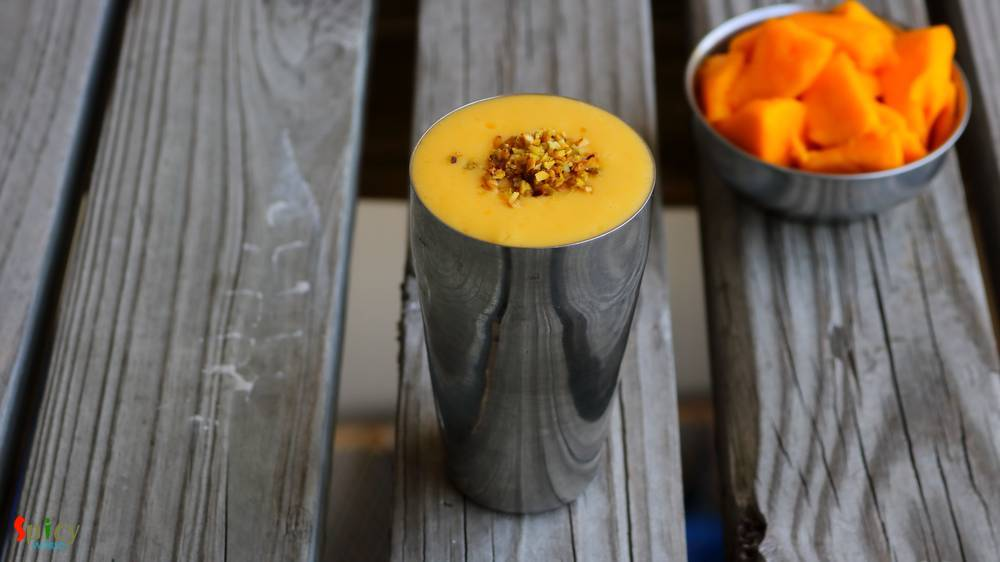
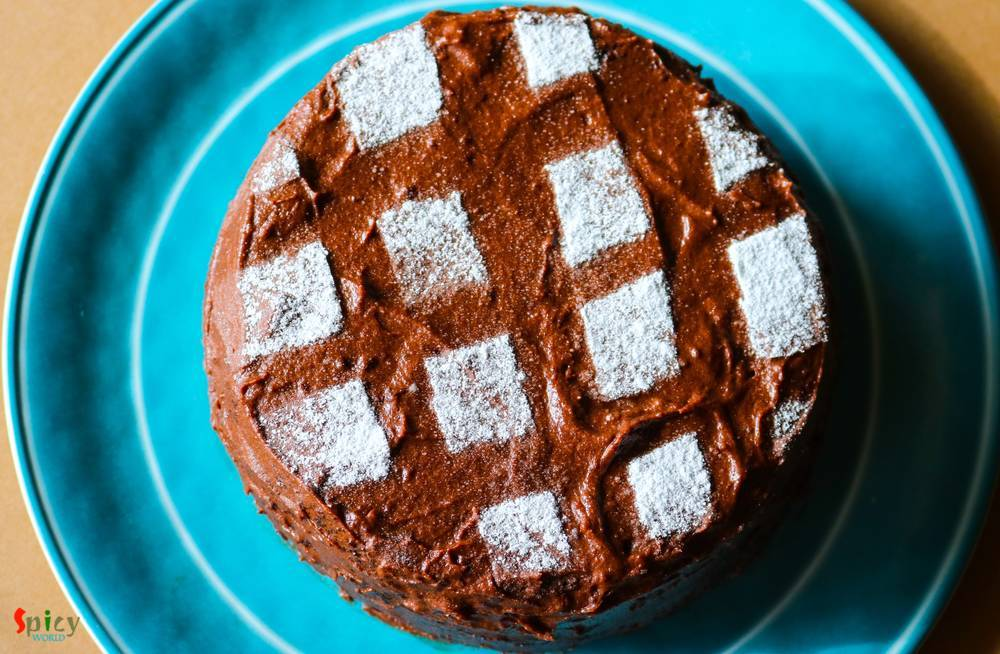
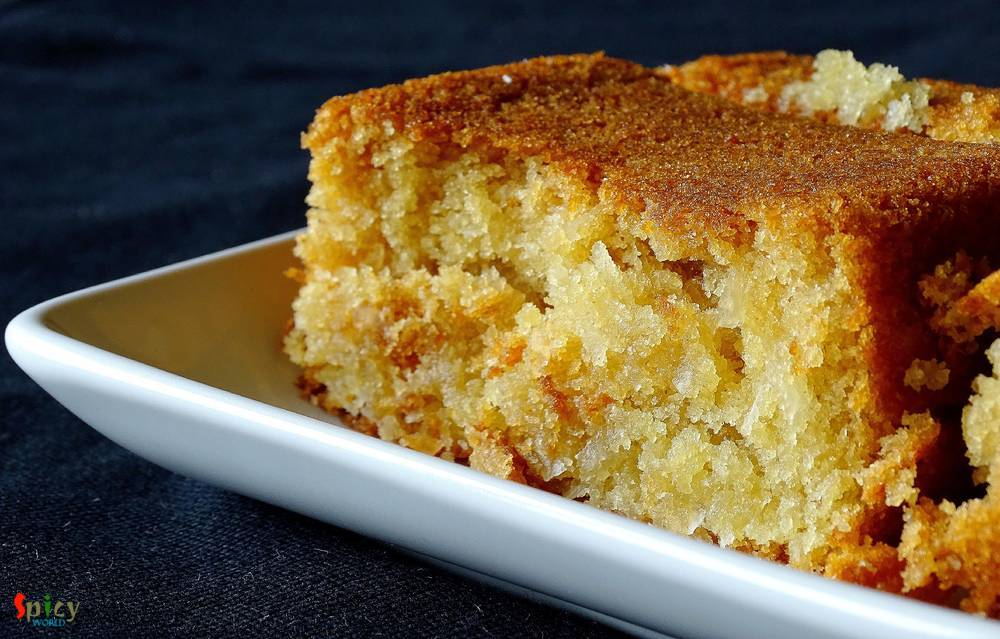
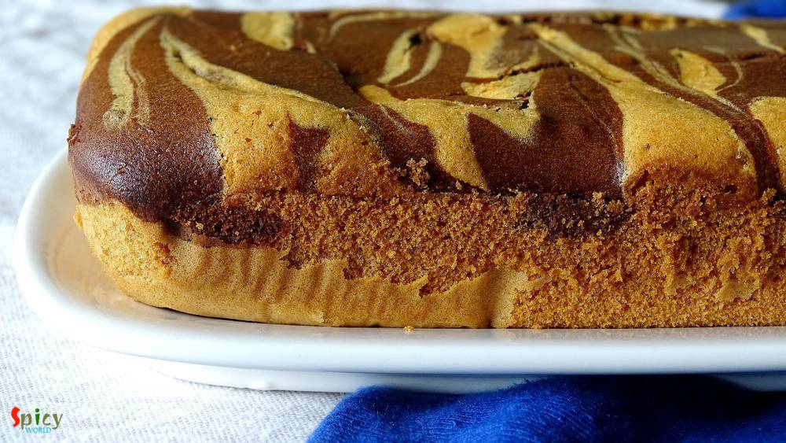
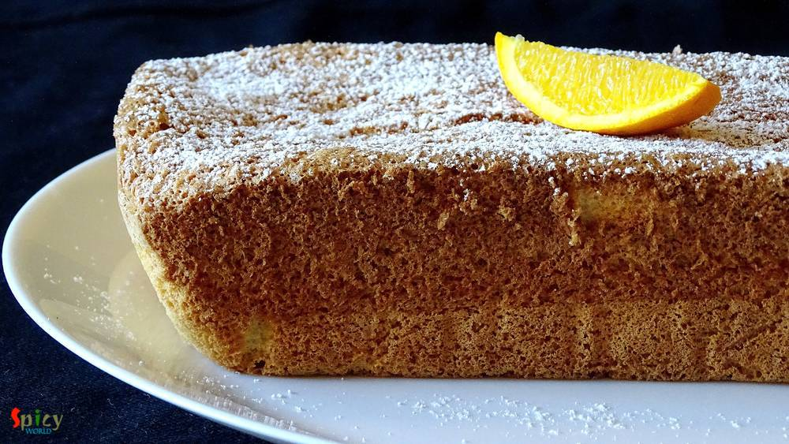
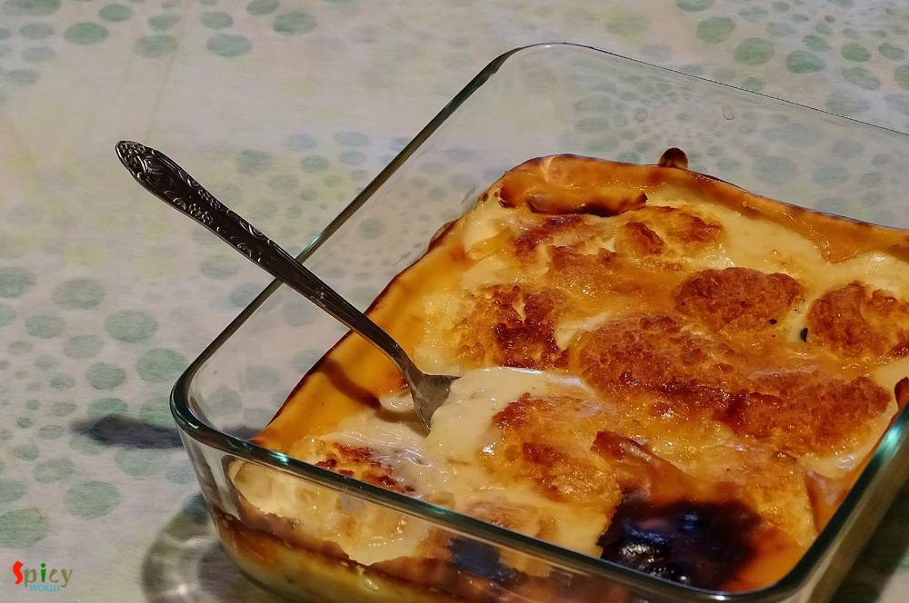

Simple and Easy Recipes
Posts on 'sweet'

Veg Recipe
Apr 2, 2019
Chanar Payesh is a traditional Bengali dessert recipe in which soft, crumbled panner will be cooked in semi thickened milk along with condensed milk and green cardamom. The texture of Chanar Payesh is very important - neither too thick nor too thin. In one word this Payesh tastes delicious and more over it is very easy to make. During summer, when you want to make some cold, lightly sweetened dess ...


Veg Recipe
Mar 26, 2019
Can you imagine summer without mango? Mango is one of my favorite fruit with which you can make so many things like Yogurt, Ice cream, Phirni, Kheer, Cake, Cheesecake and what not. This season I made Mango Sondesh, taste and texture came out really good. You can make them with Ricotta cheese also, in that case add some milk powder as ricotta cheese is much thinner than Paneer. Mango pulp is going ...

Veg Recipe
Mar 11, 2019
You can find so many variety of Chum Chum recipe on internet. They all taste good, I can assure you that. Today what I am going to share is Kolkata special 'Lord Chom Chom' sweet recipe, in which cylindrical shaped Paneer will be cooked in sugar syrup then they will get a good coat of thick Malai (thickened milk) and Mawa (dried milk). In one word Chom Chom = a piece of heaven. Trust me I am not k ...

Veg Recipe
Feb 18, 2019
Rosogolla is cottage cheese balls cooked and soaked in suger syrup. Rosogolla is a Bengali delicacy. You will get so many flavors of them in Kolkata sweet shops, like Nolen gur / Rose / Mango / Strawberry / Paan / Cardamom and what not! But one of my favorite is Sponge Rosogolla which is plain and simple. They are literally light and soft like sponges! If you follow every tips of this recipe you w ...

Veg Recipe
Dec 7, 2018
In Bengal, we enjoy our winter with some signature food and sweets. One of the popular sweet is Nolen gurer Sondesh. Nolen gur is Date Palm Jaggery which is a very fragrant variety of Jaggery. Be it Gurer Rosogolla or Sondesh any Bengali can die for them. I kept the process very simple. So, go ahead enjoy the recipe with video and make them in your kitchen as soon possible.

Veg Recipe
Nov 26, 2018
'Payesh' / Rice pudding is a very common dessert in Bengal. Having payesh on any occasion is considered as a good sign. Nolen gur means Date Palm Jaggery which we get during winter season. The aroma and color of Nolen Gur is phenomenal. Sweet shops sell so many variety of sweets with date palm jaggery like - Gurer Rosogolla, Gurer Sondesh, Gurer Patisapta and what not! Payesh needs babysitting, as ...
 Pulao / বাসন্তী পোলাও / Holud Pulao / Mishti Pulao")
Veg Recipe
Aug 10, 2018
This is a traditional bengali dish. 'Basanti' means yellow colour. You can also call this Sweet (mishti) Pulao. My mom make this in many gatherings along with Macher Kalia or Mutton Kosha. I have literally no words about the combination. This is the must combination 'he' wants on his birthday. But once we had this with Chicken Dopyaza (already on blog) and that combo was also so good! Give it a tr ...

Veg Recipe
Jul 22, 2018
During summer Mango Lassi is the best thing you can have. Lassi will soothen your body and tummy. Its kind of a smoothie but yogurt based drink. Sometimes after having a big glass of this you won't even need your lunch ... yes this drink is heavy, creamy and what not ! Try this in your kitchen and let me know how it turns out for you.
May 15, 2018
This is a very popular recipe of mango: Mango Mastani. It has all sorts of goodness like mango pulp, fresh cream, vanilla ice cream and few other ingredients. I make this quite often in summer as it is very easy and effortless recipe. Do give this recipe a try and let me know how it turned out for you.

Nonveg Recipe
Sep 1, 2016
Hey folks! I'm going back to India next week, that's why for few days I've been very busy with packing and all, regular blog post is also not happening ... very sorry for that but I hope you will understand. In Austin, this 'basic chocolate cake' will be my last post because tomorrow we will disconnect our internet. While cleaning the kitchen last week, I found half box of cocoa powder, half box o ...
Aug 4, 2016
Chicken Pakoras require no introduction. Specially when they are coated with a sweet and spicy sauce ... I love to eat them more than I love to eat any Chinese takeouts. It's a very kid friendly recipe and you can always control the heat level according to your little ones tastebuds. These tangy, spicy bites are more than yumm ! If you are having guest and you want to serve them a new starter then ...

Veg Recipe
May 4, 2016
Papaya is not new for any of us. We consume this fruit in both forms - raw and ripe. I love to eat ripe papaya as it is. They are so sweet and juicy, also very good for our health. Afternoons are so hot these days, almost every day I make smoothie with different type of fruits. Last week I made this 'papaya smoothie' and we loved it. It not only makes you cool but also works magically for disturbe ...
")
Veg Recipe
Apr 29, 2016
Mango is all over the market nowadays. Everybody loves juiciness and sweetness of mango during summer. You can make so many desserts with mango. One of my favourite among them is 'maongo mousse'. Mousse has very light and fluffy texture that's why I love to eat it. Sometimes, to me, after having heavy meals rich dessert becomes overpowering, in those case 'mousse' is very good option. I made my mo ...

Veg Recipe
Mar 17, 2016
I made last weekend another successful eggless cake and the flavour was 'coconut'. I have never used coconut before in cake batter but this time I do and result was 'scrumptious'. After making this, your heart will call for a bite to this moist cake and then a sip of warm tea ... aaaahh pure bliss ! If you are obsessed with coconut then treat yourself with a big piece of this eggless flaky coconut ...

Veg Recipe
Mar 7, 2016
I think without a cup of tea every day is incomplete. Don't you think so ?? Tea plays a very important role in our life. In the morning my father needs a cup of tea, a biscuit and a newspaper. I guess every household has the same story in India. To me every gossip and get to gather is incomplete without tea. Every country has their own taste of tea. Here is the recipe of our Indian special 'masala ...
")
Veg Recipe
Mar 2, 2016
In Austin winter has already started melting down. Specially at afternoon hot dry air and sunlight starts forcing us to say 'goodbye' to winter. The season of sweating and thirsting is almost waiting on our doorstep. But we can always make suitable and comfortable food for any kind of season. 'Tres Leches' (Spanish word) cake is the perfect chilled dessert for summer. In this recipe an eggless cak ...
")
Veg Recipe
Mar 1, 2016
I wanted to make a vegan chocolate cake but ended up with these fluffy squares. This type of incident happens a lot with me. Actually I made the batter in less quantity with comparison of my baking tray. So, after successful baking, length of the cake was thin. The whole round was not photogenic, but don't you think these squares are too cute ?? Well, sometimes it's better to give some last moment ...

Nonveg Recipe
Feb 25, 2016
This is my third successful cake on first attempt. To make 'marble cake' you will need two flavours. I have used most common two flavours - vanilla and chocolate. You can use any flavours of your choice. The texture of this cake impressed me a lot. Just love to bite those chocolate swirls with vanilla sponge.

Nonveg Recipe
Feb 22, 2016
I am a beginner in the baking world. 'Vanilla sponge Cake' without oil and butter is my second successful cake. The taste was quite good and I was really impressed by its texture. In this sponge cake the key ingredient is egg. Egg whites will make this cake spongy and fluffy. You can enjoy it as snack or with a cup of tea.

Veg Recipe
Dec 21, 2015
The day before yesterday I was craving for some dessert at afternoon. As I didn't have any in my kitchen, had to make it by own. The quickest recipe I found is this one 'Sooji Halwa'. It really takes 20-25 minutes to prepare and tastes awesome. You can make 'halwa' in many colors like white, golden, yellow or orange. But I like my halwa little yellow in color. This was the first time I made halwa ...

Veg Recipe
Dec 1, 2015
I know making 'naroo' is a really time consuming task. Specially when you have puja in your house, there are several works to do. Here is the shortcut version of 'naroo', which you can make in 10 minutes. The recipe is so simple and needs very few ingredients. Naroo, made with fresh coconut, tastes heavenly. But believe me you will love these too. Try this in your kitchen and let me know how it tu ...

Veg Recipe
Nov 24, 2015
'Diwali' is the celebration of light and sound. Its been two years I am away from home (Kolkata). My papa used to buy me lots of crackers a day before diwali, we toast them in sunlight and in the evening of diwali my (maternal) uncle bought me some more crackers for his 'vagni'. Then around 8 pm me and my papa used to decorate our roof with candles and after that we started doing fireworks with ou ...

Veg Recipe
Oct 25, 2015
This recipe happened by mistake last week. I know what you are thinking!! But I will never regret about this mistake because it turned out delicious. Let me tell you the story first. Last week I took an attempt to make 'sondesh', but the taste came out very less sweeter. I got panicked and immediately called my only life saver 'mom'. She adviced me to follow the process of 'rosmalai'. In rosmalai ...

Veg Recipe
Sep 23, 2015
Whoever like me love to eat banana, this drink is for them. This is a very healthy drink for summer. This needs very few ingredients. Hope you will like it.

Veg Recipe
Sep 18, 2015
This is a very refreshing drink in summer. In India we call this Mango Lassi. My favourite summer fruit is mango. You can make many kinds of drink, dessert with mango. So let's try this.